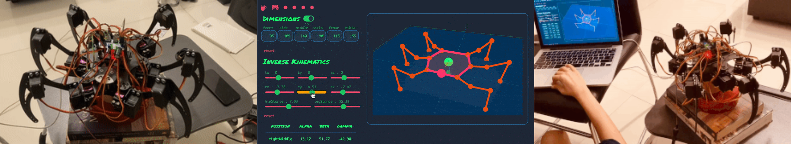
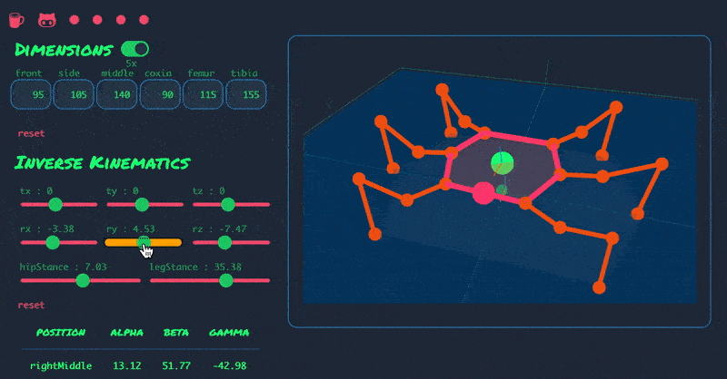

Simulation for Forward and Inverse Kinematics of Hexapod
Oct 2022 - Dec 2022
Arizona State University, Tempe, Arizona
Introduction
Legged robots, inspired by the locomotion of legged organisms, are designed to traverse a variety of terrains. These robots come in different types, such as one-legged, biped, tripod, quadruped, and hexapod, each with its unique gait and support pattern. In this project, we focus on a Hexapod robot with three degrees of freedom (DoF) legs, spatially arranged for versatility in navigating diverse terrains and obstacles.
The Hexapod comprises six legs symmetrically distributed along its thorax. Each leg consists of three links: Coxa, Femur, and Tibia. The project's objective is to develop a visualization tool for the Forward and Inverse Kinematics of the Hexapod, featuring an interactive graphical user interface (GUI). This tool calculates the joint angles of each leg by utilizing the transformation matrix obtained from Inverse Kinematics.
Simulation Capabilities
- Utilizing an interactive JavaScript-based web application, users can simulate the kinematics of the Hexapod by inputting dynamic parameters.
- The simulation boasts remarkable accuracy, with results achieving up to 95% precision.
Web Application Usage
This web application serves as a versatile tool for solving inverse kinematics, simulating various gaits, and more. Users can view real-time data on the angles formed by the eighteen joints of the robot in any given pose. All computations are performed directly in the user's browser, ensuring fast and responsive performance. Notably, the app does not rely on external mathematics libraries; it exclusively utilizes JavaScript's built-in Math object.
For access to the web application, please visit the following link: Hexapod Kinematics Web App
Check out the project here GitHub for code.